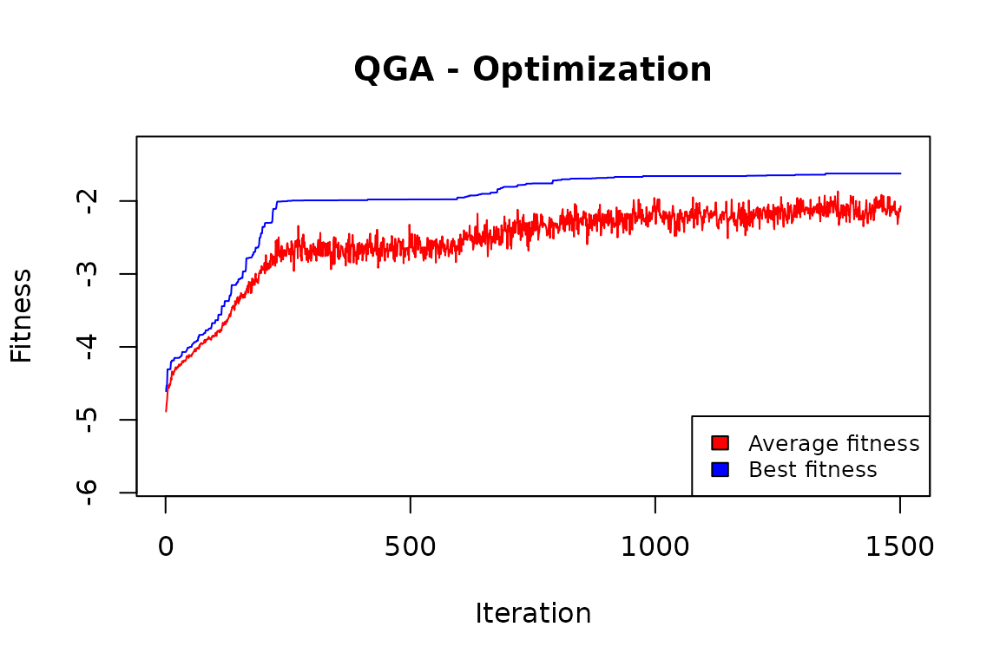
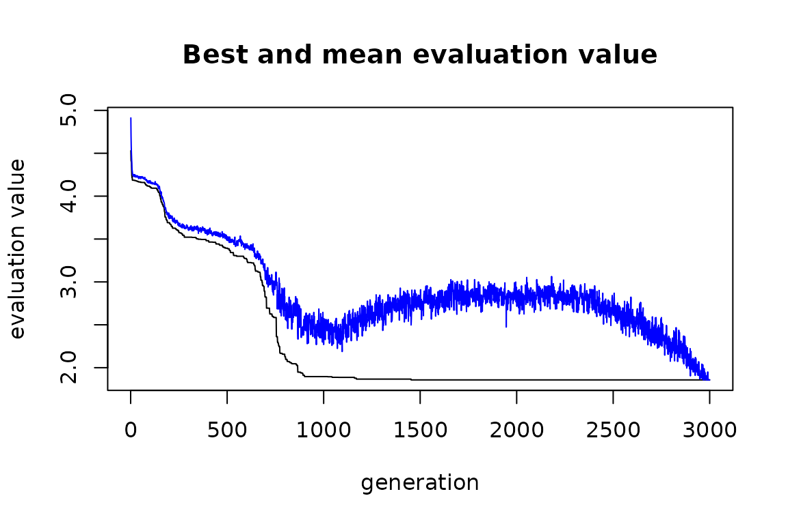

“Cluster analysis or clustering is the task of grouping a set of objects in such a way that objects in the same group (called a cluster) are more similar (in some specific sense defined by the analyst) to each other than to those in other groups (clusters).” (from Wikipedia). In our study, we consider the multivariate case, where clustering is done considering more than one variable. First, we apply the Quantum Genetic Algorithm, then a classical GA, and compare their results.
We make use of the “iris” dataset:
data(iris)
vars <- colnames(iris)[1:4]
vars
#> [1] "Sepal.Length" "Sepal.Width" "Petal.Length" "Petal.Width"The above four variables will be used in clustering.
The following fitness evaluation function is defined:
clustering <- function(solution, eval_func_inputs) {
maxvalue <- 5
penalfactor <- 2
df <- eval_func_inputs[[1]]
vars <- eval_func_inputs[[2]]
# Fitness function
fitness <- 0
for (v in vars) {
cv <- tapply(df[,v],solution,FUN=sd) / tapply(df[,v],solution,FUN=mean)
cv <- ifelse(is.na(cv),maxvalue,cv)
fitness <- fitness + sum(cv)
}
# Penalization on unbalanced clusters
b <- table(solution)/nrow(df)
fitness <- fitness + penalfactor * (sum(abs(b - c(rep(1/(length(b)),length(b))))))
return(-fitness)
}This function receives as input parameters:
We define the Genome parameter as the number of entries in the “iris” dataset. The number of values is set equal to the 3. This means that each solution is a vector of 150 elements, each one with an assigned value from 1 to 3: each couple element/value indicates which entry (element) is assigned to which cluster (value).
nclust = 3
popsize = 20
Genome = nrow(iris)
set.seed(1234)
CLUSTsolution <- QGA(popsize,
generation_max = 1500,
nvalues_sol = nclust,
Genome,
thetainit = 3.1415926535 * 0.1,
thetaend = 3.1415926535 * 0.05,
pop_mutation_rate_init = 1/(popsize + 1),
pop_mutation_rate_end = 1/(popsize + 1),
mutation_rate_init = 1/(Genome + 1),
mutation_rate_end = 1/(Genome + 1),
mutation_flag = TRUE,
plotting = FALSE,
verbose = FALSE,
progress = FALSE,
eval_fitness = clustering,
eval_func_inputs = list(iris, vars),
stop_iters = 300)
QGA:::plot_Output(CLUSTsolution[[2]])
The plot indicates that the number of iterations was enough to obtain a solution that is likely to be no further improved.
solution <- CLUSTsolution[[1]]
fitnessQGA <- 0
df <- iris
for (v in vars) {
cv <- tapply(df[,v],solution,FUN=sd) / tapply(df[,v],solution,FUN=mean)
cv <- ifelse(is.na(cv),maxvalue,cv)
fitnessQGA <- fitnessQGA + sum(cv)
}
fitnessQGA
#> [1] 1.62336We can try to understand the quality of these clusters by comparing them to the “Species” variable in the dataset:
iris$cluster <- solution
xtabs( ~ Species + cluster, data=iris)
#> cluster
#> Species 1 2 3
#> setosa 0 0 50
#> versicolor 45 5 0
#> virginica 5 45 0It seems that the cluster values can predict quite well the Species of the iris flowers, with only 10 misclassifications out of 150.
We can now compare these results with those obtained by a classical genetic algorithm, the one implemented in the R package “genalg”.
The fitness function:
evaluate <- function(solution) {
solution <- round(solution)
maxvalue <- 5
penalfactor <- 2
fitness <- 0
for (v in vars) {
cv <- tapply(iris[,v],solution,FUN=sd) / tapply(iris[,v],solution,FUN=mean)
cv <- ifelse(is.na(cv),maxvalue,cv)
fitness <- fitness + sum(cv)
}
b <- table(solution)/nrow(iris)
# Penalisation on unbalanced clusters
fitness <- fitness + penalfactor * (sum(abs(b - c(rep(1/(length(b)),length(b))))))
return(fitness)
}To ensure good results to the GA we give a number of iterations (2500) that is much higher than the one given to the QGA (1500).
set.seed(1234)
solution_genalg <- rbga(stringMin=c(rep(1,nrow(iris))),
stringMax=c(rep(nclust,nrow(iris))),
popSize=20,
iters=3000,
elitism=NA,
mutationChance = 5/(nrow(iris)+1),
evalFunc=evaluate)
plot(solution_genalg)
filter = solution_genalg$evaluations == min(solution_genalg$evaluations)
bestObjectCount = sum(rep(1, solution_genalg$popSize)[filter])
if (bestObjectCount > 1) {
bestSolution = solution_genalg$population[filter, ][1,
]
} else {
bestSolution = solution_genalg$population[filter, ]
}
bestSolution <- round(bestSolution)
fitnessGA <- 0
for (v in vars) {
cv <- tapply(iris[,v],bestSolution,FUN=sd) / tapply(iris[,v],bestSolution,FUN=mean)
cv <- ifelse(is.na(cv),maxvalue,cv)
fitnessGA <- fitnessGA + sum(cv)
}
fitnessGA
#> [1] 1.857548
fitnessQGA
#> [1] 1.62336Also considering the obtained stratification:
iris$stratum <- bestSolution
table(iris$Species, iris$stratum)
#>
#> 1 2 3
#> setosa 0 50 0
#> versicolor 12 0 38
#> virginica 38 0 12the classic GA one is less in line with the “natural” one.
In this case, the Quantum GA is more efficient than the classical GA.
In general, when the number of values that each element in the genome can assume is not high (in this case, there are only 3 different values), then a relative efficiency of the QGA is to be expected. When the number of these values is high, the classical GA tends to be more efficient.
This is because the QGA needs to define a number of qubits that is the integer ceiling value of log(n) (in our case n=3, so the number of qubits is 2). The length of the solution is given by the product of the length of the genome (in our case 150) by the number of qubits necessary for each element of the genome, so 150x2=300.
On the contrary, the classical GA can work directly on an integer representation of the values for each element of the genome, so the length of the solution does not increase.
When the n is high, the length of the solution treated by the QGA is much higher than that of the solution treated by the classical GA, so the latter can be more efficient than the former.